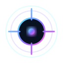

TRAFFIC FLOW
Views over time
No traffic recorded in this range.

Discover your GitHub Pages automatically, inspect real visitor telemetry, and explore edge-level details from a single interface.
Loading discovered telemetry…
| TIME | PROJECT | IP | LOCATION | PAGE | DEVICE | BROWSER | DURATION | REFERRER |
|---|